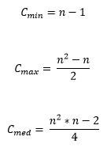
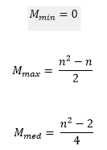

Es un método de ordenamiento de datos, que se ubica dentro de los algoritmos de orden simple, sin embargo no es muy eficiente, en cuanto al uso de recursos de máquina.
El funcionamiento general del algoritmo se basa en insertar un elemento o dato del arreglo a su izquierda, estando esta ya ordenada.
La primera iteración toma el segundo dato del arreglo y si este es menor que el primer dato se intercambian. Durante la segunda iteración, el sistema analiza el tercer elemento y lo inserta en la posición adecuada, respecto a los primeros dos datos, dando como resultado los tres datos ordenados. En la n iteración, los primeros n datos en el arreglo inicial terminan ordenados.
Ejemplo
24 36 2 22 67 61 83 29 6 53
En este caso, un software que efectué el ordenamiento por inserción, primero buscara los dos datos iniciales del arreglo (24 y 36). Como estos dos elementos ya se encuentran ordenados, el programa continua, pero si no estuvieran en su respectivo orden, el sistema los intercambiaría.
En la iteración que sigue, el programa estudia el tercer valor (2). Como el valor es menor que 36, el programa crea un variable temporal y lo aloja allí, mientras que el 36 lo mueve una posición a la derecha; luego el programa vuelve y estudia el dato que queda y concluye que 2 es menor que 24, entonces, mueve una posición a la derecha al número 24; y como el programa llega al inicio del arreglo, saca de la variable temporal el número 2 y lo deja en la primera posición o la posición cero (recordemos que en programación la posición cero es real o se tiene en cuenta, por decirlo así). El arreglo quedaría así:
2 24 36 22 67 61 83 29 6 53
Continuando con las iteraciones, ahora el programa aloja el 22 en una variable temporal, después coteja el 22 con el 36 y mueve al 36 una posición a la derecha, porque este es mayor que 22. Luego coteja el 22 con el 24 y como 24 es mayor que 22, mueve el 24 una posición a la derecha. Finalmente compara el 22 con el 2 y como 22 es mayor que 2, aloja el 22 en la posición 1. El arreglo queda de la siguiente forma:
2 22 24 36 67 61 83 29 6 53
Y así sucesivamente, este algoritmo en la n iteración, los primeros n valores del arreglo inicial terminan ordenados.
ANALISIS DE EFICIENCIA
Mediante comparaciones, el algoritmo realiza la siguiente forma matemática

En los intercambios o movimientos
